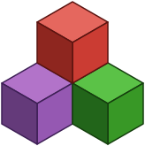
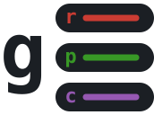

ReactantNitro.jl
A training framework for Reactant, built around the REPL and Revise
ReactantServer.jl
Serves Reactant-compiled models over KServe V2, with pre and post processing in plain Julia
ReactantNitro.jl
A training framework for Reactant, built around the REPL and Revise
ReactantServer.jl
Serves Reactant-compiled models over KServe V2, with pre and post processing in plain Julia

Luximm.jl Pretrained vision backbones for Lux.jl, in the spirit of timm

gRPCServer.jl A native Julia gRPC server